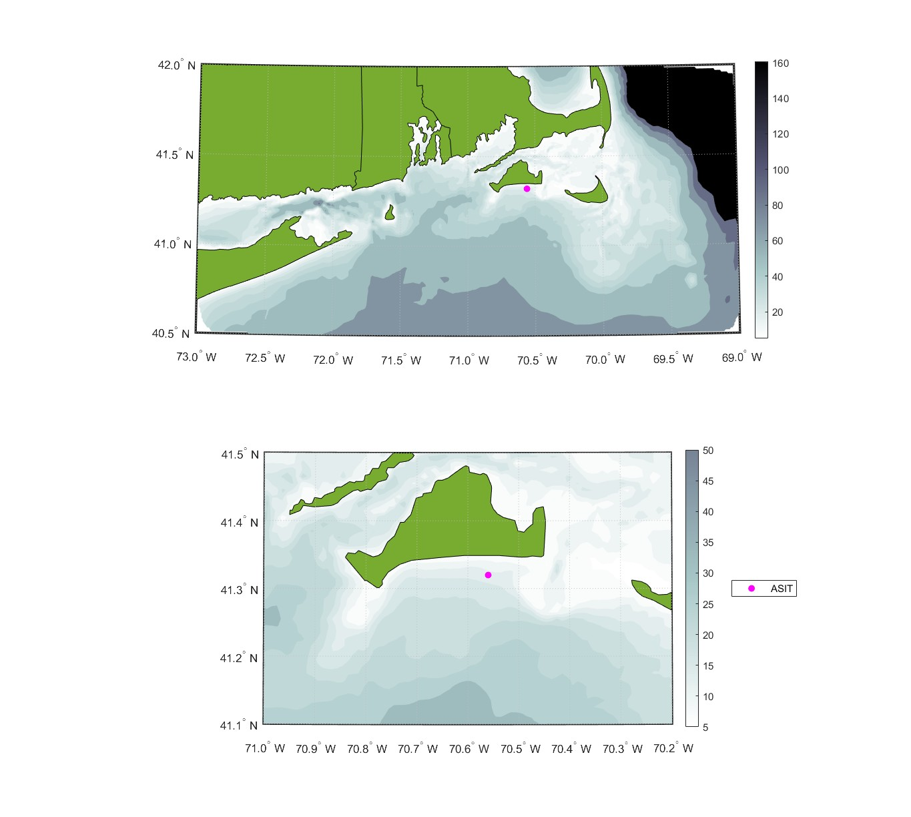
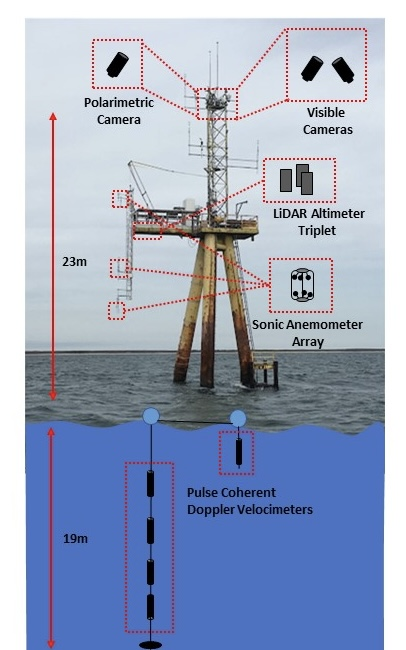
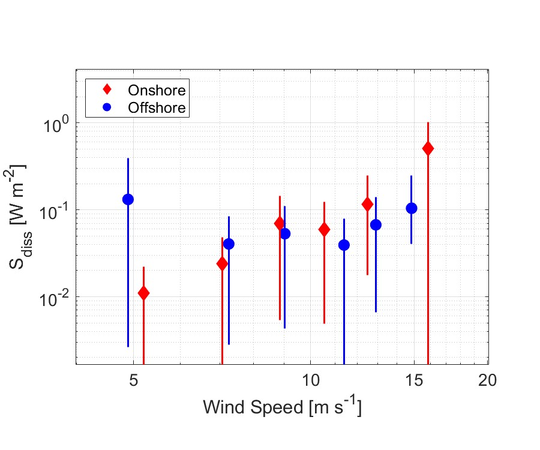
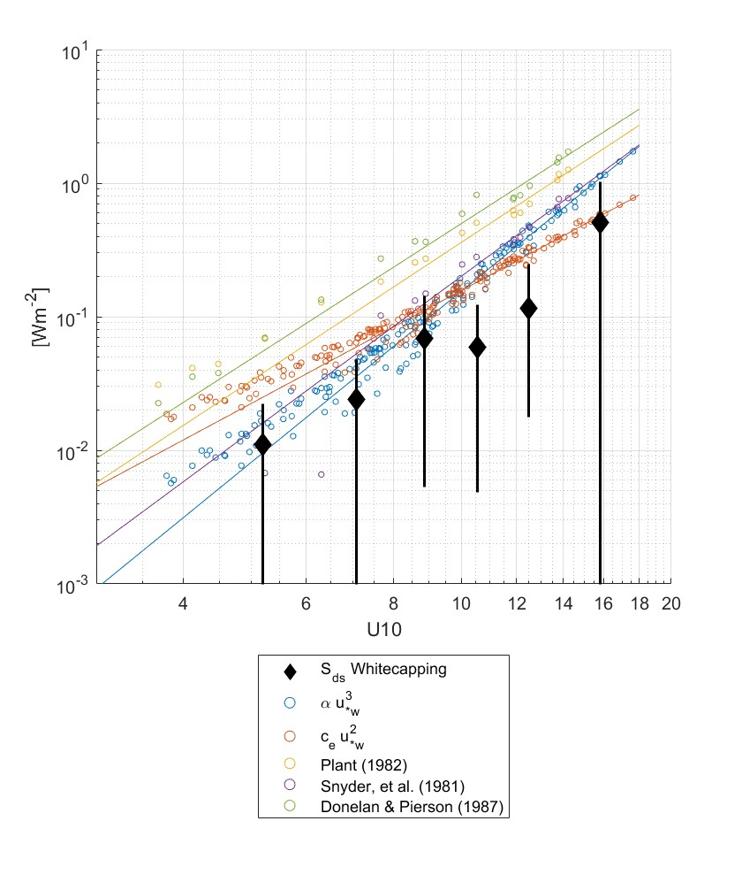
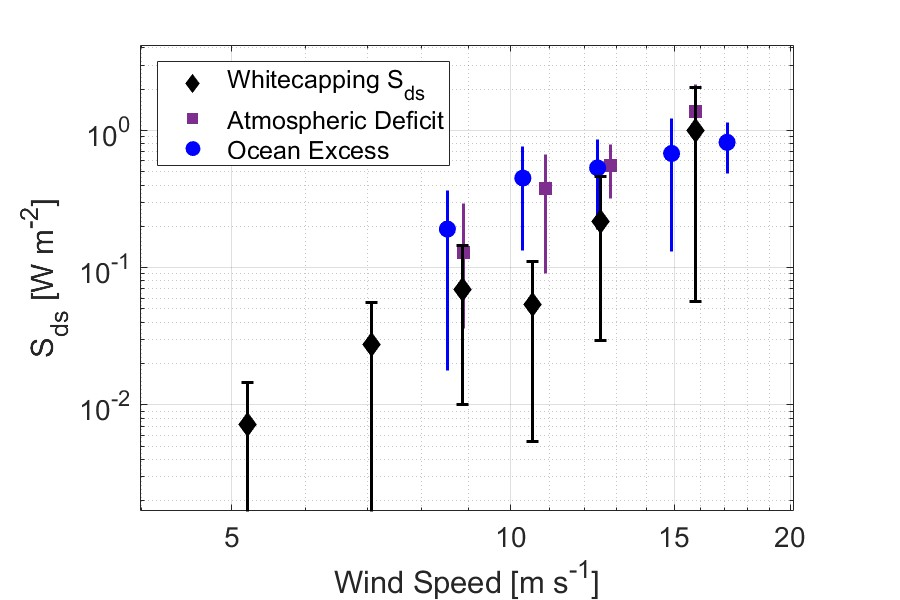
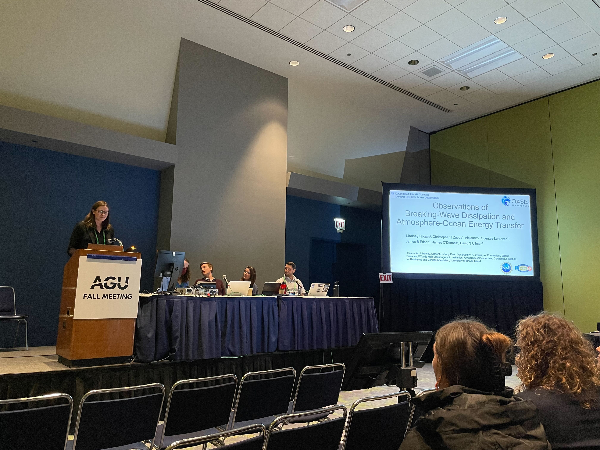

From October 2019 to February 2020, a suite of instruments was mounted on the Air-Sea Interaction tower off the south coast of Marthas Vineyard. Meteorological instruments, cameras imaging the sea surface, and oceanographic instruments mounted to the sea floor were positioned to measure the turbulent kinetic energy budget above, below, and at the air-sea interface throughout the stormy North Atlantic winter. We examine the energy balance in the wavefield between energy input by wind and energy dissipation by breaking waves in order to relate the turbulence structure of the atmosphere and the ocean and to quantify the energy exchange between wind, waves, and the near-surface ocean.
ASIT tower post instrument installation. Photo by Carson Witte
ASIT tower location.
Polarimetric and visible cameras were mounted on the tower to record imagery of the sea surface, and a triplet of LiDAR Altimeters recorded sea surface elevation. An array of three sonic anemometers measured the profile of winds and turbulent fluctuations in the bottom 20 meters of the atmosphere. An array of acoustic doppler current profilers measured the profile of turbulent flow in the water, from just below the surface to the bottom at 19m depth.
Two visible cameras captured more than 200 hours of nearly 6000 square meters of the sea surface. Whitecaps, or visible breaking waves, are identified and tracked in the visible imagery, following the process shown below. From the length and speed of each whitecap, we compute the whitecap statistics, quantifying the length and speed of each whitecap, and relating these statistics to the rate of energy dissipation by breaking waves.
We split the dataset into short fetch, offshore wind conditions, when the wind is coming from the North (blue), and unlimited fetch, onshore wind conditions, when the wind is coming from the South over the open ocean (red). While dissipation by whitecaps generally increases with wind speed, more scatter is observed in short-fetch conditions by offshore winds.
By computing wind energy input to the wave field with multiple empirical functions, we also find that energy dissipation balances energy input under most conditions. At very high wind speeds, where energy input is greater than energy dissipation, we hypothesize the excess energy input goes into wave growth.
To understand how the wind input and wave dissipation balance mediates the structure of turbulence near the sea surface, we compare these fluxes to the Turbulent Kinetic Energy (TKE) budgets of the near-surface atmosphere and the water column. In the atmosphere, there is a deficit of TKE dissipation, relative to theoretical values predicted by the law-of-the-wall. This deficit is related to the wave-supported energy flux from the wind to waves (purple squares). In the ocean, there is a surplus, or excess of TKE dissipation relative to theoretical values. This excess dissipation is related to transport of TKE at the surface (blue circles) and is primarily supported by breaking waves. We find that energy transfer from the atmosphere to the ocean is not fully accounted for by whitecap dissipation. This may be due to dissipation by micro-breaking waves that are not captured in visible imagery, or might be explained by other dissipation mechanisms not yet resolved.
Mark your calendars for Lindsay’s presentation at the Ocean Sciences Meeting: Monday, February 19th, 2024 at 2pm in the session “AI13A: Fluxes, Surface Waves, and Physical Processes at the Air-Sea Interface III”
Lindsay Hogan presented preliminary results at the 2022 AGU Fall Meeting in December 2022 and at the WISE Workshop in May 2023.